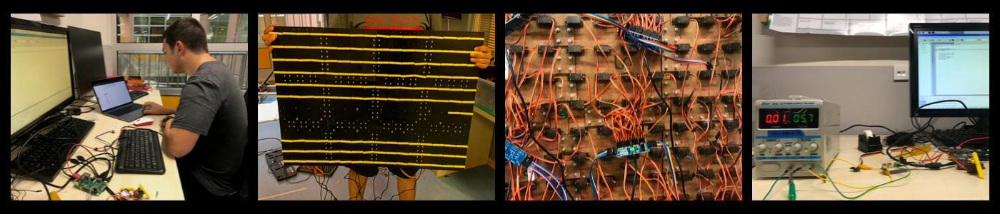

Our team consists of three 11th grade students, a computer science teacher and two graduates.
Visualizer is a project that aims to combine art, music and technology by controlling servo rotations in two main methods. In the first method, the Intel RealSense camera on the Visualizer will sense your presence, as it scans the solid object placed in front of it with Open CV. Then, the servos on the Visualizer will rotate and imitate you, or another object you put in front of the camera. In the second method, servo motors will rotate according to the beats of a music, inspired by the baroque period, which has been composed by the computer. The computer uses various rules of music theory such as rhythm, chord progressions and root notes to compose a meaningful piece. The user can alter this piece by choosing a tone, mood and rhythm.
Visualiser aims to combine art, music and technology by rotating servo motors to create shapes of solid objects it senses.
Can Aydın
Deniz Erduran
Yağmur Aytemiz
We, Deniz, Yağmur, and Can created Visualiser in order to combine art, music and technology. In the 21st century various branches are merging to form even more powerful creations. We think that art, music and technology create an appealing presentation together, rather than individually, as the combination of those three helps display a piece on multiple dimensions of strength a creation holds. As some of us are interested in arts and the others in music, we decided to combine our interests over a field we all held enthusiasm for: technology.
Visualizer is a project that aims to combine art, music and technology by controlling servo rotations in two main methods. In the first method, the Intel RealSense camera on the Visualizer will sense your presence, as it scans the solid object placed in front of it with Open CV. Then, the servos on the Visualizer will rotate and imitate you, or another object you put in front of the camera. In order to do this, the camera calculates the depth of the object placed in front of it. The depth captured by the camera is separated to its pixels and each servo motor is adjusted and moved according to the pixels the camera captures. To summarize, in the first method Visualizer will visualize anything the camera can see. In the second method, servo motors will rotate according to the beats of a music, inspired by the baroque period, which has been composed by the computer. The computer uses various rules of music theory such as rhythm, chord progressions and root notes to compose a meaningful piece. The user can alter this piece by choosing a tone, mood and rhythm. There will be eight tone options (C, D, E, F, G, A, B), two mood options (major, minor), and two rhythm options (thirds, fourths). Visualiser will create certain images according to the instruments, rhythm and notes in the composition. For example, certain servos will move every time the kick in the drum is played. That way we will be able to visualize the characteristics, beats, harmony and structure, of a music piece.